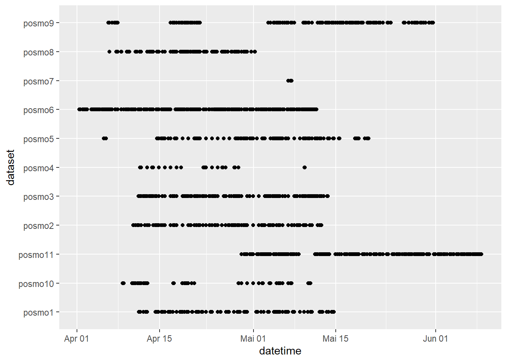
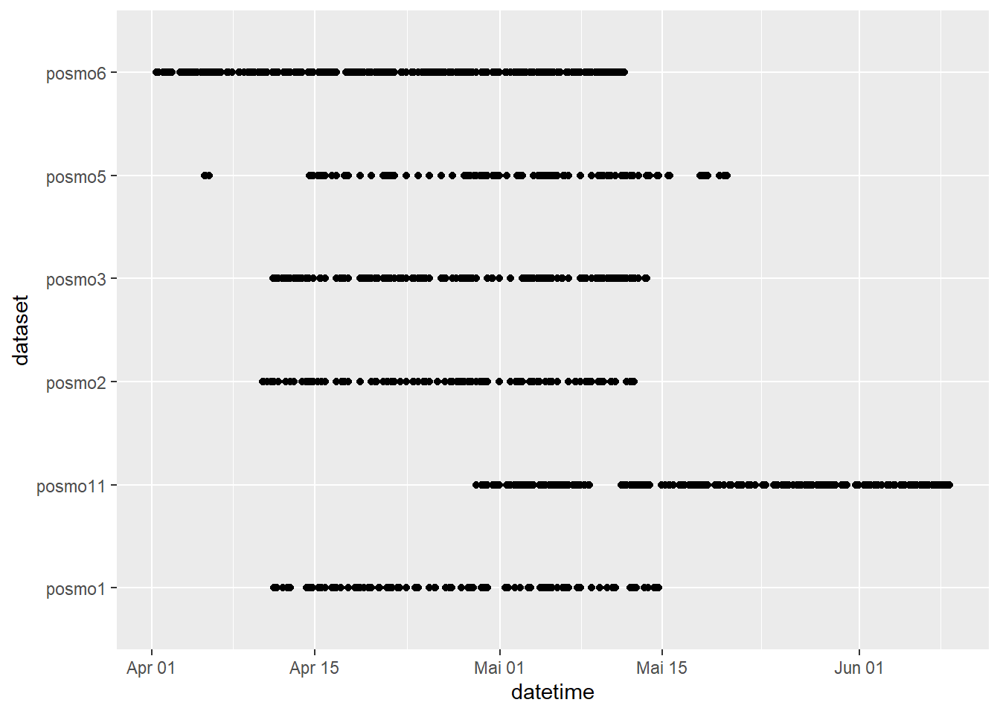

threshold trip duration & rain Map visualization schön mache evt. removal of transport modes in pre pro Boxplots vereinheitlichen
Introduction
It is known that several factors influence spatio-temporal movement of people. Like weather (Quelle), day of the week (quelle) and time of the day (quelle).
Pre-Processing
Packages
# clear space rm(list=ls())# load packages library("readr")library("dplyr")
Attache Paket: 'dplyr'
Die folgenden Objekte sind maskiert von 'package:stats':
filter, lag
Die folgenden Objekte sind maskiert von 'package:base':
intersect, setdiff, setequal, union
library("ggplot2")library("sf")
Linking to GEOS 3.9.3, GDAL 3.5.2, PROJ 8.2.1; sf_use_s2() is TRUE
Die folgenden Objekte sind maskiert von 'package:terra':
intersect, union
Die folgenden Objekte sind maskiert von 'package:base':
date, intersect, setdiff, union
library("plotly")
Attache Paket: 'plotly'
Das folgende Objekt ist maskiert 'package:ggplot2':
last_plot
Das folgende Objekt ist maskiert 'package:stats':
filter
Das folgende Objekt ist maskiert 'package:graphics':
layout
Load Data
we exclude gps data, because of the inherent different nature of data structure of this dataset, which would make research work more complex
# load all posmo data --------------------------------------- posmo1 <-read_delim("posmo_data/steinm05_posmo_2023_04_10_2023_05_15.csv")
Rows: 2635 Columns: 7
── Column specification ────────────────────────────────────────────────────────
Delimiter: ","
chr (4): user_id, weekday, place_name, transport_mode
dbl (2): lon_x, lat_y
dttm (1): datetime
ℹ Use `spec()` to retrieve the full column specification for this data.
ℹ Specify the column types or set `show_col_types = FALSE` to quiet this message.
Rows: 7228 Columns: 7
── Column specification ────────────────────────────────────────────────────────
Delimiter: ","
chr (4): user_id, weekday, place_name, transport_mode
dbl (2): lon_x, lat_y
dttm (1): datetime
ℹ Use `spec()` to retrieve the full column specification for this data.
ℹ Specify the column types or set `show_col_types = FALSE` to quiet this message.
Rows: 21453 Columns: 7
── Column specification ────────────────────────────────────────────────────────
Delimiter: ","
chr (4): user_id, weekday, place_name, transport_mode
dbl (2): lon_x, lat_y
dttm (1): datetime
ℹ Use `spec()` to retrieve the full column specification for this data.
ℹ Specify the column types or set `show_col_types = FALSE` to quiet this message.
posmo4 <-read_delim("posmo_data/posmo - BuJa.csv") # nur bike data
Rows: 1140 Columns: 7
── Column specification ────────────────────────────────────────────────────────
Delimiter: ","
chr (4): user_id, weekday, place_name, transport_mode
dbl (2): lon_x, lat_y
dttm (1): datetime
ℹ Use `spec()` to retrieve the full column specification for this data.
ℹ Specify the column types or set `show_col_types = FALSE` to quiet this message.
posmo5 <-read_delim("posmo_data/posmo_1.csv")
Rows: 11040 Columns: 7
── Column specification ────────────────────────────────────────────────────────
Delimiter: ","
chr (4): user_id, weekday, place_name, transport_mode
dbl (2): lon_x, lat_y
dttm (1): datetime
ℹ Use `spec()` to retrieve the full column specification for this data.
ℹ Specify the column types or set `show_col_types = FALSE` to quiet this message.
posmo6 <-read_delim("posmo_data/posmo_2.csv")
Rows: 30643 Columns: 7
── Column specification ────────────────────────────────────────────────────────
Delimiter: ","
chr (4): user_id, weekday, place_name, transport_mode
dbl (2): lon_x, lat_y
dttm (1): datetime
ℹ Use `spec()` to retrieve the full column specification for this data.
ℹ Specify the column types or set `show_col_types = FALSE` to quiet this message.
posmo7 <-read_delim("posmo_data/posmo_3.csv")
Rows: 891 Columns: 7
── Column specification ────────────────────────────────────────────────────────
Delimiter: ","
chr (4): user_id, weekday, place_name, transport_mode
dbl (2): lon_x, lat_y
dttm (1): datetime
ℹ Use `spec()` to retrieve the full column specification for this data.
ℹ Specify the column types or set `show_col_types = FALSE` to quiet this message.
Rows: 11544 Columns: 7
── Column specification ────────────────────────────────────────────────────────
Delimiter: ","
chr (4): user_id, weekday, place_name, transport_mode
dbl (2): lon_x, lat_y
dttm (1): datetime
ℹ Use `spec()` to retrieve the full column specification for this data.
ℹ Specify the column types or set `show_col_types = FALSE` to quiet this message.
posmo9 <-read_delim("posmo_data/Naladata.csv")
Rows: 15062 Columns: 7
── Column specification ────────────────────────────────────────────────────────
Delimiter: ","
chr (4): user_id, weekday, place_name, transport_mode
dbl (2): lon_x, lat_y
dttm (1): datetime
ℹ Use `spec()` to retrieve the full column specification for this data.
ℹ Specify the column types or set `show_col_types = FALSE` to quiet this message.
posmo10 <-read_delim("posmo_data/posmo_e3.csv")
Rows: 6943 Columns: 7
── Column specification ────────────────────────────────────────────────────────
Delimiter: ","
chr (4): user_id, weekday, place_name, transport_mode
dbl (2): lon_x, lat_y
dttm (1): datetime
ℹ Use `spec()` to retrieve the full column specification for this data.
ℹ Specify the column types or set `show_col_types = FALSE` to quiet this message.
Rows: 42073 Columns: 7
── Column specification ────────────────────────────────────────────────────────
Delimiter: ","
chr (4): user_id, weekday, place_name, transport_mode
dbl (2): lon_x, lat_y
dttm (1): datetime
ℹ Use `spec()` to retrieve the full column specification for this data.
ℹ Specify the column types or set `show_col_types = FALSE` to quiet this message.
Filter data/ create workable dataframe
# name users for easier data handling posmo1 <- posmo1 |>mutate(dataset ="posmo1")posmo2 <- posmo2 |>mutate(dataset ="posmo2")posmo3 <- posmo3 |>mutate(dataset ="posmo3")posmo4 <- posmo4 |>mutate(dataset ="posmo4")posmo5 <- posmo5 |>mutate(dataset ="posmo5")posmo6 <- posmo6 |>mutate(dataset ="posmo6")posmo7 <- posmo7 |>mutate(dataset ="posmo7")posmo8 <- posmo8 |>mutate(dataset ="posmo8")posmo9 <- posmo9 |>mutate(dataset ="posmo9")posmo10 <- posmo10 |>mutate(dataset ="posmo10")posmo11 <- posmo11 |>mutate(dataset ="posmo11")# bind all data together, create a single dataframe posmo <-rbind(posmo1, posmo2, posmo3, posmo4, posmo5, posmo6, posmo7, posmo8, posmo9, posmo10, posmo11)# Exclude rows with missing values using complete.cases() because transforming into sf object does not work, when we have missing values in coordinate columnsposmo <- posmo[complete.cases(posmo$lon_x), ]# transform posmo data into an sf object posmo <-st_as_sf(posmo, coords =c("lon_x","lat_y"), crs =4326) |>st_transform(2056)# transform datetime into POSIXct format posmo <- posmo |>mutate(datetime =as.POSIXct(datetime))
Cut Dataset in Time
# look at data consistencyggplot(posmo, aes(datetime, dataset))+geom_point()

# exclude posmo7, posmo4, posmo10 due to insufficient time overlap with the other datasets# additionally remove user_id and place_name column, because the column dataset has unique/simple names for every user posmo <- posmo |>subset(dataset !="posmo4"& dataset !="posmo7"& dataset !="posmo10"& dataset !="posmo9"& dataset !="posmo8") |>select(-user_id, -place_name)# control if posmo4 is removed posmo$dataset |>unique()
# -> posmo4, posmo7 and posmo10 successfully removed# plot data without outliers to set timespan for further analysisggplot(posmo, aes(datetime, dataset))+geom_point()

# choose timespan in which the most overlap of measurements between users is posmo <- posmo |>filter(datetime >="2023-04-28 00:00:00", datetime <"2023-05-09 00:00:00") # look at the new timecut data - more consistent ggplot(posmo, aes(datetime, dataset))+geom_point()
knitr::opts_chunk$set(eval =FALSE)
Remove outliers
# delete trajectory data outside of switzerland (= delete outliers; norway & france): look at single posmo data to determine outliers tmap_mode("view")# outlier - norway & france tm_shape(posmo) +tm_dots()# load swiss boundary for intersection swiss <-read_sf("data/schweiz.gpkg")# intersect posmo data with swiss boarder# posmo <- cbind(posmo, st_coordinates(posmo))# bbox_swiss <- st_bbox(swiss)# posmo |> # filter(X > bbox_swiss$xmin, # X < bbox_swiss$xmax, # Y > bbox_swiss$ymin, # Y < bbox_swiss$ymax)# st_bbox(posmo) |> st_as_sfc() |> tm_shape() + tm_polygons()# optionalposmo_cut <-st_filter(posmo, swiss)# remove transport_mode "Airplane" because it is part of the outliers posmo_cut <- posmo_cut |>subset(transport_mode !="Airplane")# control if outliers are removed tm_shape(posmo_cut) +tm_dots()# save cleaned dataset in an .gpkg file to shorten calculation time for subsequent analysing steps st_write(posmo_cut, "posmo_data/posmo_cut.gpkg", delete_dsn =TRUE)
Add convenience variables
day/night, weekend/weekday
# load outlier free data for shorter calculation time posmo <-read_sf("posmo_data/posmo_cut.gpkg")# Add convenience variable weekend vs. workday (Sa-So: Weekend, Mo-Fr: Workday) posmo <- posmo |>mutate(day_week =ifelse(weekday %in%c("Sat", "Sun"), "weekend", "weekday"))# Add concenience variables day vs. night (Day: 06:00 – 22:00, Night: 22:00 – 06:00) # Define the start and end time rangesstart_time <-as.POSIXct("06:00:00", format ="%H:%M:%S", tz ="UTC")end_time <-as.POSIXct("22:00:00", format ="%H:%M:%S", tz ="UTC")# Extract only the time componentstart_time <-format(start_time, format ="%H:%M:%S")end_time <-format(end_time, format ="%H:%M:%S")# create convenience variables day vs. nightposmo <- posmo |>mutate(time =format(datetime, format ="%H:%M:%S", tz ="UTC"), # Add convenience variable with only time day_night =ifelse(time >= start_time & time <= end_time, "night", "day"))# proof if convenience variables worked unique(posmo$day_night)unique(posmo$day_week)# add convenience variable with date only (without time) and remove columns which are not usedposmo <- posmo |>mutate(date = lubridate::date(datetime))
rain/no rain
Meaning of the columns in weather: - tre200s0 = Air temperature 2 m above ground (momentary value in °C) - rco150z0 = Precipitation duration in ten-minute sum - sre00z0 = Sunshine duration ten-minute sum
# load all weather data legend <-read_delim("data/weather_legend.csv")weather_raw <-read_delim("data/weather_measurements.csv") # join weather and legend data togetherweather <-left_join(weather_raw, legend, by ="stn")# create sf object of joined dataweather <-st_as_sf(weather, coords =c("E","N"), crs =2056)# look at spatial distribution of weather stations #tm_shape(weather) +# tm_dots() # ----> dauert irgendwie total lang/geht nicht # create a new column with a rounded Datetime for the posmo data, to create a time join key with the weather data posmo <- posmo |>mutate(Datetime_round = lubridate::round_date(datetime, "10 minutes") )# create an sf object for legend to calculate nearest stationslegend_sf <-st_as_sf(legend, coords =c("E","N"), crs =2056) # calculate nearest weather stations from every point of trajectoryposmo$stn <- legend_sf$stn[st_nearest_feature(posmo, legend_sf)]# select only rain data, time and station names from weather weather_posmo <-st_drop_geometry(weather) |>select(rco150z0, time, stn) # join rain and station name information for every trajectory point which is the nearest to the calculated stations posmo_added <-left_join(posmo, weather_posmo, by =c("stn"="stn", "Datetime_round"="time"))# create convenience variable with rain/no rain for every entry posmo_added <- posmo_added |>mutate(rain =ifelse(rco150z0 %in%c(0, NA), "no_rain", "rain"))
rainy / not rainy day
# calculate rainy, not rainy days posmo <- posmo_added |>group_by(date) |>mutate(sum_rain =sum(rco150z0, na.rm =TRUE),rain_day =ifelse(sum_rain <85, "no_rain", "rain")) # hier noch threshold festlegen
Function to calculate metrics used
# writefunction to calculate steplength, timelag # function to calculate steplengtheucdist <-function(x, y) { steplength <-sqrt((lead(x, 2) - x)^2+ (lead(y, 2) - y)^2)return(steplength)}# function to calculate timelaglag_time <-function(z) { timelag <-as.numeric(difftime(lead(z), z, units ="secs"))return(timelag)}# seperate coordinates in two different columns for subsequent analysis stepsposmo_coordinates <-st_coordinates(posmo)# add the separated coordinates to the posmo variable posmo_sep <-cbind(posmo, posmo_coordinates)# calculate timelag, steplenght and speed for the whole datasetposmo <- posmo_sep |>mutate(timelag =lag_time(datetime),steplength =eucdist(X, Y),speed = steplength/timelag ) |>subset(!is.infinite(speed))
Calculate temporal window
### Calculate temporal windows # calculates time taken from each step to the next # n_plus2 calculates an offset of 2 time stepsposmo <- posmo |>mutate(n_plus1 =sqrt((lead(X) - X)^2+ (lead(Y) - Y)^2), # distance to pos + 10 secondsn_plus2 =sqrt((lead(X, 2) - X)^2+ (lead(Y, 2) - Y)^2), # distance to pos +20 secondsn_minus1 =sqrt((lag(X) - X)^2+ (lag(Y) - Y)^2), # distance to pos -10 secondsn_minus2 =sqrt((lag(X, 2) - X)^2+ (lag(Y, 2) - Y)^2) # distance to pos -20 seconds )# ungroup() because when we apply rowwise() each row is a grouped individually which we don't want. posmo <- posmo |>rowwise()|>mutate(stepMean =mean(c(n_minus1, n_minus2, n_plus1, n_plus2)) ) |>ungroup()# define static points to discard later posmo <- posmo |>group_by(transport_mode) |>mutate(static = stepMean <mean(stepMean, na.rm =TRUE))# Segment-based analysis# Assign segmet IDs and use them to remove short segments and calculate segment (trip) durationrle_id <-function(vec) { x <-rle(vec)$lengthsas.factor(rep(seq_along(x), times = x))}# assign segment IDs to dataframe posmo <- posmo |>mutate(segment_id =rle_id(static))# check the resulted segments unique(posmo$segment_id) # For mean duration of trips per weekday/weekend-day remove static segments and segments with duration < 10 min# only movement segmentsposmo_trips <- posmo |>filter(!static)# calculate trip duration and trip distanceposmo_trips <- posmo_trips |>group_by(segment_id) |>mutate(trip_duration =sum(speed), trip_dis =sum(steplength))# remove trips that are shorter than 10min = 600s - probieren einzeln setzen oder weglassen posmo_trips <- posmo_trips |>subset(trip_duration >600)
Save cleaned, added dataset one with all and one with segmented data
# save clean data in dataframe as .gpkg#st_write(posmo, "posmo_data/posmo_clean.gpkg")# save clean data set with .csv for all datawrite_csv(posmo, "posmo_data/posmo_clean2.csv")# save clean data set with .csv for segmented datawrite_csv(posmo_trips, "posmo_data/posmo_trips.csv")
Research Questions
Question 1: Miriam
Does the day of the week (weekend vs. workday) have an impact on spatio-temporal movement patterns? ### Spatial Analysis #### Load cleaned data
# load clean data posmo <-read_delim("posmo_data/posmo_trips.csv")
Segmentierte Daten nehmen - Speed & Distance
thought: How about removing certain transport modes (funicular, horse, Other?)
# choose travelmodes which make sense (other and funicula excluding)posmo <- posmo |>subset(transport_mode !="Other1"& transport_mode !="Funicular")# check if subsetting worked unique(posmo$transport_mode)# Boxplot compare weekend/ weekday without grouping (overall steplength)ggplot(posmo, aes(transport_mode, log(steplength), fill = day_week)) +geom_boxplot() +labs(title ="Travelled Distance per Transport Mode", subtitle ="Comparing Weekend vs. Weekday", fill ="Day of the Week") +ylab("Log Steplength [m]") +xlab("Transport Mode") +scale_fill_manual(values =c("weekday"="lavenderblush3", "weekend"="aquamarine3"), labels =c( "Weekday", "Weekend")) +theme_minimal()# Boxplot compare weekend/ weekday without grouping (overall speed)ggplot(posmo, aes(transport_mode, log(speed), fill = day_week)) +geom_boxplot() +labs(title ="Speed per Transport Mode", subtitle ="Comparing Weekend vs. Weekday", fill ="Day of the Week") +ylab("Log Speed [m/s]") +xlab("Transport Mode") +scale_fill_manual(values =c("weekday"="lavenderblush3", "weekend"="aquamarine3"), labels =c( "Weekday", "Weekend")) +theme_minimal()# Table Summary question1_summary <- posmo |>group_by(day_week, transport_mode) |>summarise(steplength_mean =mean(steplength, na.rm = T),speed_mean =mean(speed, na.rm = T)) |>mutate(percentage_steplength = steplength_mean/sum(steplength_mean)*100,percentage_speed = speed_mean/sum(speed_mean)*100)
Temporal Analysis
Load trips data
# load clean trips data posmo <-read_delim("posmo_data/posmo_trips.csv")
Duration
Mean duration of trips compared between Weekend vs. Weekday
# choose travelmodes which make sense (other and fu)posmo <- posmo |>subset(transport_mode !="Other1"& transport_mode !="Funicular")# check if subsetting worked unique(posmo$transport_mode)# Calculate mean duration and mean dis of trips per day# mean trip duration looks odd, need to check that (!!)ggplot() +geom_boxplot(data = posmo, aes(transport_mode, trip_duration/60, fill = day_week)) +labs(title ="Trip Duration per Transport Mode", subtitle ="Comparing Weekend vs. Weekday", fill ="Day of the Week") +ylab("Duration [min]") +xlab("Transport Mode") +scale_fill_manual(values =c("weekday"="lavenderblush3", "weekend"="aquamarine3"), labels =c( "Weekday", "Weekend")) +theme_minimal()#log(trip_duration/60) glaube ich nicht nötig#mean trip distance compared between weekend/weekday seems OKggplot() +geom_boxplot(data = posmo, aes(day_week, log(trip_dis), fill = day_week)) +labs(title ="Trip Distance per Transport Mode", subtitle ="Comparing Weekend vs. Weekday", fill ="Day of the Week") +ylab("Log Distance [m]") +xlab("Transport Mode") +scale_fill_manual(values =c("weekday"="lavenderblush3", "weekend"="aquamarine3"), labels =c( "Weekday", "Weekend")) +facet_wrap(~transport_mode, nrow =1) +theme_minimal()
Layout anpassen- Create Visual Maps
# transform posmo data into an sf object posmo <-st_as_sf(posmo, coords =c("X","Y"), crs =2056) # 1. add grouping variable to the sf objectposmo_grouped <-group_by(posmo, dataset)# 2. use summarise() to "dissolve" all point into a multipoint objectposmo_smry <-summarise(posmo_grouped)# 3. run st_convex_hull()mcp_posmo <-st_convex_hull(posmo_smry)
Durchschnittliche Reisestrecke pro Tageszeit, gibt es Tageszeiten zu denen man eher längere/kürzere Strecken reist?
Durchschnittliche Anzahl Reisen pro Tag?
Analysis
Load cleaned data
# load clean data posmo <-read_delim("posmo_data/posmo_trips.csv")
Legende anschreiben - Analysis with segmented posmo data
# jetzt das noch mit segmentierten Daten # round datetime to 1h posmo_round <- posmo |>mutate(hour = lubridate::hour(datetime))# create dataframe, which calculates mean steplength, speed per hour over all dates# here with weekdays posmo_hour <- posmo_round |>group_by(hour, weekday) |>summarise(mean_dis =mean(steplength, na.rm =TRUE),mean_speed =mean(speed, na.rm =TRUE), mean_duration =mean(trip_duration, na.rm =TRUE)) # mo-so with distance (steplength) travelledggplot(posmo_hour, aes(hour, mean_dis, col = weekday)) +geom_point() +geom_line(lwd =0.7) +labs(title ="Mean Tavelled Distance over 24h", subtitle ="Compared from Monday to Sunday", color ="Day of the Week") +ylab("Mean Distance [m]") +xlab("Hour") +theme_minimal()# mo-so with speed ggplot(posmo_hour, aes(hour, mean_speed, col = weekday)) +geom_point() +geom_line(lwd =0.7) +labs(title ="Mean Speed over 24h", subtitle ="Compared from Monday to Sunday", color ="Day of the Week") +ylab("Mean Speed [m/s]") +xlab("Hour") +theme_minimal()# mo-so with trip duration ggplot(posmo_hour, aes(hour, mean_duration/60, col = weekday)) +geom_point() +geom_line(lwd =0.7) +labs(title ="Mean Trip Duration over 24h", subtitle ="Compared from Monday to Sunday", color ="Day of the Week") +ylab("Mean Duration [min]") +xlab("Hour") +theme_minimal()# create dataframe, which calculates mean steplength, speed per hour over all dates# here with days of the week (weekend vs. weekday)posmo_day <- posmo_round |>group_by(hour, day_week)|>summarise(mean_dis =mean(steplength, na.rm =TRUE),mean_speed =mean(speed, na.rm =TRUE),mean_duration =mean(trip_duration, na.rm =TRUE)) # weekend vs. weekday with distance (steplength) travelledggplot(posmo_day, aes(hour, mean_dis, col = day_week)) +geom_point() +geom_line(lwd =0.7) +labs(title ="Mean Tavelled Distance over 24h", subtitle ="Compared between Weekend vs. Weekday", color ="Weekend vs. Weekday") +ylab("Mean Distance [m]") +xlab("Hour") +theme_minimal()# weekend vs. weekday with speedggplot(posmo_day, aes(hour, mean_speed, col = day_week)) +geom_point() +geom_line(lwd =0.7) +labs(title ="Mean Speed over 24h", subtitle ="Compared between Weekend vs. Weekday", color ="Weekend vs. Weekday") +ylab("Mean Speed [m/s]") +xlab("Hour") +theme_minimal()# weekend vs. weekday with trip duration ggplot(posmo_day, aes(hour, mean_duration/60, col = day_week)) +geom_point() +geom_line(lwd =0.7) +labs(title ="Mean Trip Duration over 24h", subtitle ="Compared between Weekend vs. Weekday", color ="Weekend vs. Weekday") +ylab("Mean Duration [min]") +xlab("Hour") +scale_color_manual(values =c("weekday"="lavenderblush3", "weekend"="aquamarine3", labels =c("Weekday", "Weekend"))) +theme_minimal()
Question 3: Mirjam
Does the weather condition (e.g. rain, sunshine) impact spatio-temporal patterns of students by foot and/or bicycle? - spatial: movement pattern (duration, distance, velocity) - temporal: mean distance per weekend-day or workday-day 2. Unterscheiden zwischen regentaugliche, regenuntaugliche Transport modes (Fragestellung anpassen zu regentauglich, nicht regentauglich)
Spatial Analysis
Load cleaned data
# load clean data posmo <-read_delim("posmo_data/posmo_trips.csv")
Speed & Distance
# choose travelmodes which make sense (other and funicula excluding)posmo <- posmo |>subset(transport_mode !="Other1"& transport_mode !="Funicular")# check if subsetting worked unique(posmo$transport_mode)# Boxplot compare rain/ no rain without grouping (overall steplength)ggplot(posmo, aes(transport_mode, log(steplength), fill = rain_day)) +geom_boxplot() +labs(title ="Travelled Distance per Transport Mode", subtitle ="Comparing Rainy vs. Dry Days", fill ="Rain vs. Dry") +ylab("Log Steplength [m]") +xlab("Transport Mode") +scale_fill_manual(values =c("no_rain"="lavenderblush3", "rain"="aquamarine3"), labels =c( "Dry", "Rain")) +theme_minimal()# Boxplot compare rain/ no rain without grouping (overall speed)ggplot(posmo, aes(transport_mode, log(speed), fill = rain_day)) +geom_boxplot() +labs(title ="Speed per Transport Mode", subtitle ="Comparing Rainy vs. Dry Days", fill ="Rain vs. Dry") +ylab("Log Speed [m/s]") +xlab("Transport Mode") +scale_fill_manual(values =c("no_rain"="lavenderblush3", "rain"="aquamarine3"), labels =c( "Dry", "Rain")) +theme_minimal()# Table Summary question2_summary <- posmo |>group_by(rain_day, transport_mode) |>summarise(steplength_mean =mean(steplength, na.rm = T),speed_mean =mean(speed, na.rm = T)) |>mutate(percentage_steplength = steplength_mean/sum(steplength_mean)*100,percentage_speed = speed_mean/sum(speed_mean)*100)
Temporal Analysis
Load trips data
# load clean trips data posmo <-read_delim("posmo_data/posmo_trips.csv")
Duration
Mean duration of trips compared between Rain and Dry Days
# choose travelmodes which make sense (other and funicula excluding)posmo <- posmo |>subset(transport_mode !="Other1"& transport_mode !="Funicular")# check if subsetting worked unique(posmo$transport_mode)# Calculate mean duration and mean dis of trips per day# mean trip duration looks odd, need to check that (!!)ggplot() +geom_boxplot(data = posmo, aes(transport_mode, trip_duration/60, fill = rain_day)) +labs(title ="Travelled Distance per Transport Mode", subtitle ="Comparing Rainy vs. Dry Days", fill ="Rain vs. Dry") +ylab("Duration [min]") +xlab("Transport Mode") +scale_fill_manual(values =c("no_rain"="lavenderblush3", "rain"="aquamarine3"), labels =c( "Dry", "Rain")) +theme_minimal()# mean trip distance compared between rain/no rainggplot() +geom_boxplot(data = posmo, aes(transport_mode, log(trip_dis), fill = rain_day)) +labs(title ="Speed per Transport Mode", subtitle ="Comparing Rainy vs. Dry Days", fill ="Rain vs. Dry") +ylab("Log Distance [m]") +xlab("Transport Mode") +scale_fill_manual(values =c("no_rain"="lavenderblush3", "rain"="aquamarine3"), labels =c( "Dry", "Rain")) +theme_minimal()
Legende anschreiben - Create Visual Maps
# transform posmo data into an sf object posmo <-st_as_sf(posmo, coords =c("X","Y"), crs =2056) # 1. add grouping variable to the sf objectposmo_grouped <-group_by(posmo, dataset)# 2. use summarise() to "dissolve" all point into a multipoint objectposmo_smry <-summarise(posmo_grouped)# 3. run st_convex_hull()mcp_posmo <-st_convex_hull(posmo_smry)